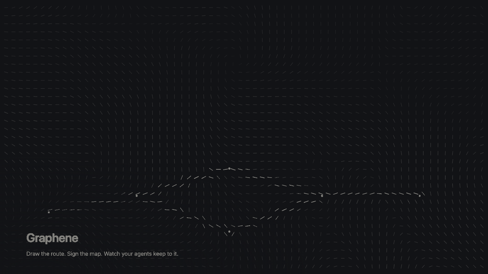

Draw the route. Sign the map. Watch your agents keep to it.
A goal becomes a graph you can export, edit and approve. The approved
revision is what runs — every work task scoped, every retry fenced, every result
verified, and the files it publishes able to answer graphene why.
The problem
Five agents on one repository, and you are the scheduler.
Two of them answer the same open question differently, one quietly overwrites the other’s file, and a failed step retries with the same instructions that just failed. The usual fix is more coordination prompt — which asks the probabilistic part of the system to be the reliable part.
Graphene uses a contract instead: one approved plan revision per mission, a write scope per worker, checks as the only definition of done, and lineage that outlives the run.
The loop
You change the route. The runtime follows your change.
Graphene proposes a route and will not run it: no worker can be leased under a revision nobody approved. Step through what happens next.
- revision
- 2
- plan_sha256
- 4657377bb718c385427be0ddda84a4f62f9b679a8ebb0b93b859b626086059f2
- approval
- event records revision 2, plan_sha256 and base_sha
Assembly consumes only accepted work, verification runs the one allowed check, and the result is an isolated commit — nothing is pushed. A file published against a task’s declared write paths can then name the attempt, worker and fence behind it.
Hover, tap or focus a task to see its contract.
An interactive explanation assembled from separately verified behaviours — not one
recorded mission. Node added, assembly rewired, revision 2 approved and executed
instead of the proposal, and nothing dispatchable without its own approval:
verified locally, credential-free, by
test_plan_edit_path.py.
Diagnostic retry at a strictly higher fence: verified live on 2026-08-23.
One continuous live take of the whole sequence: not captured yet.
The revision 1 digest is the one Graphene recorded for that captured plan; the
revision 2 digest is not from a recorded mission —
scripts/plan_digest.py beside this page applies the edit above to that plan
and reproduces both.
Where Graphene fits
Different graphs answer different questions.
A repository map tells an agent where to look. An agent framework tells developers how an agent application should run. A planning graph keeps requirements and work aligned. Graphene turns one coding request into a route you can reshape, approve by digest, and then hold the runtime to.
| Tool or category | Its graph represents | Choose it when you need |
|---|---|---|
| Graft / repository maps | Existing code, written back into the repo as linked plain-English nodes | Standing context, so an agent starts oriented instead of grepping cold |
| CoderMind / planning graphs | Requirements, features, architecture, files, code entities and dependencies | To make an agent plan before it edits, across a long horizon |
| LangGraph / Studio | A developer-defined stateful agent workflow and its execution state | A framework to build, run, inspect and debug your own agent system |
| Graphene | One commit-bound coding mission: tasks, scopes, checks, artifacts and lineage | To reshape a proposed route, approve one exact revision, and execute only what that approval covers |
These layers compose. Graft can advise which context enters a node; LangGraph can host an agent runtime. Graphene’s boundary is the approved coding mission — the revision, scopes, checks, retries, artifacts and lineage meet there. Descriptions taken from each project’s own documentation, 24 August 2026.
Use Graphene when “the agent finished” is not enough, and you need to know which plan ran.
In the terminal
Captured output, not a mockup.
The first two blocks were produced credential-free with
--driver scripted-local: they are the plan surface, not a model’s
proposal. Temporary paths read TARGET; nothing else is altered, re-wrapped
or re-ordered.
$ graphene plan "Add redacted JSON and Markdown status reports to the fixture CLI." --repo TARGET --driver scripted-local
Mission: mission_start_b2e344868f963d9a3472ada4 Base: e5995606e3cd Plan: v1 / sha256:cfc96860bf0c…
ID STATE DEPS ROLE READ/WRITE CHECKS
assemble_candidate queued redact_notes,render_json,render_markdown,wire_cli assembler 12 / 8 1
redact_notes queued - report-worker 2 / 2 1
render_json queued - report-worker 2 / 2 1
render_markdown queued - report-worker 2 / 2 1
verify_candidate queued assemble_candidate verifier 12 / 0 1
wire_cli queued redact_notes,render_json,render_markdown integrator 12 / 2 1
Critical path: render_markdown → wire_cli → assemble_candidate → verify_candidate
Frontier on approval: redact_notes, render_json, render_markdown Needs approval: plan v1
Inspect one node: graphene plan show mission_start_b2e344868f963d9a3472ada4 --detailevidence/contract/2026-08-24-plan-surface/plan-surface.txt lines 1–14.$ graphene plan diff mission_start_b2e344868f963d9a3472ada4 1 2
PLAN DIFF mission_start_b2e344868f963d9a3472ada4 v1 -> v2
from sha256:cfc96860bf0c… to sha256:0170be81c70a…
~ NODE redact_notes changed
field contract: 'Replace secret-bearing notes with a stable redacted marker.' -> "Replace secret-bearing notes with a stable redacted marker. Match the shape of render_json's output."
field read_paths: +status_report/render_json.py, +tests/test_render_json.py ** SCOPE EXPANSION **
approve this revision: graphene plan approve mission_start_b2e344868f963d9a3472ada4 --revision 2** SCOPE EXPANSION ** — revision 2 now needs an approval of its own. — evidence/contract/2026-08-24-plan-surface/plan-surface.txt lines 89–95.STAGE approval established
node event mission_event_c5034ff29d43388cb6f45981c8b49919 kind=none task=none attempt=none worker=none attempt_number=none fence=none sha256=none
events mission_event_c5034ff29d43388cb6f45981c8b49919
note A committed final approval references the assembly candidate.
UNKNOWN The model-proposed plan awaits operator review.
TRUST: every line above is derived from hash-chained mission events and resolvable evidence references; unknowns are listed, never guessed.UNKNOWN line — Graphene lists what it cannot derive instead of filling it in. — evidence/north_star/2026-08-23-mission1/why_ledger_service_cli.py.txt lines 27–32.Proof
Proven today, and not yet.
Graphene keeps a machine-readable proof contract in its own repository, and the honest rows stay in it. This is the material summary, including everything that is not proven.
| Capability | Label, and what it is limited to |
|---|---|
| Live Gemini planning and two bounded workers | verified_live on 2026-08-23, with evidence-bound provider receipts |
| Diagnostic-aware retry at a strictly higher fence | verified_live observed live in both directions on 2026-08-23 |
| Credential-free core test matrix | verified_local 808 Python tests, four explicit opt-in skips |
| Terminal plan revision path — export, revise, diff, approve, execute | verified_local proven by the credential-free integration test tests/integration/test_plan_edit_path.py; no live run of the sequence yet, and this row is not in the proof contract |
| Cloud Run and real Firestore deployment | not_deployed packaging, unit tests and the official emulator are not deployment proof |
| Docker isolated executor | not_proven needs a responsive daemon and a built immutable image |
| Comparative graph benchmark | not_proven no run, no token, cost or latency result, no median, no P95 is claimed |
| Product media, and a continuous live edited-DAG take | not_proven_capture_pending nothing has been filmed |
This is the material summary. The complete machine-readable contract at commit fa302a130afd, committed 2026-08-24, is in the repository and vendored beside this page at product_proof.snapshot.json (byte-identical). It carries 12 further deferred items. Labels here only flip once the machine evidence is in the repository.
The demo
One terminal, one continuous run.

There is no demo film yet, so this is a
still rather than a play button that would not play. The submission video is labelled
not_proven_capture_pending in the proof contract above, and stays that way
until something has been filmed.